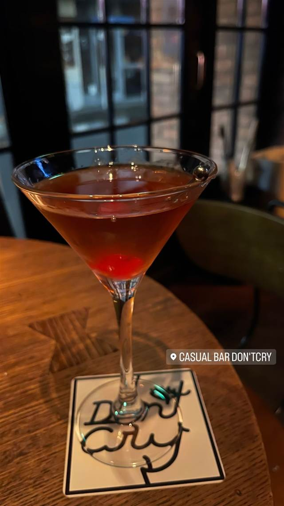
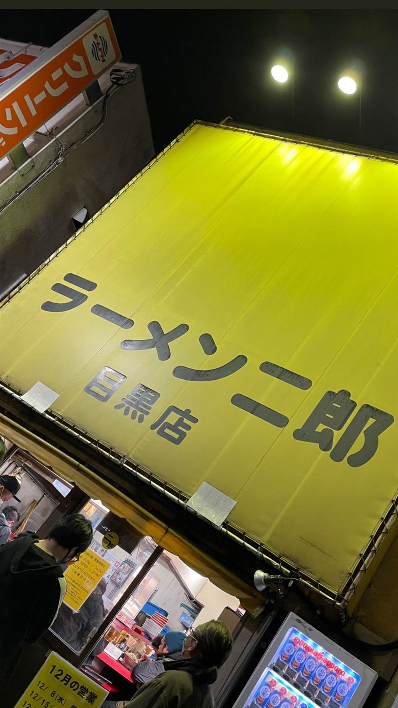
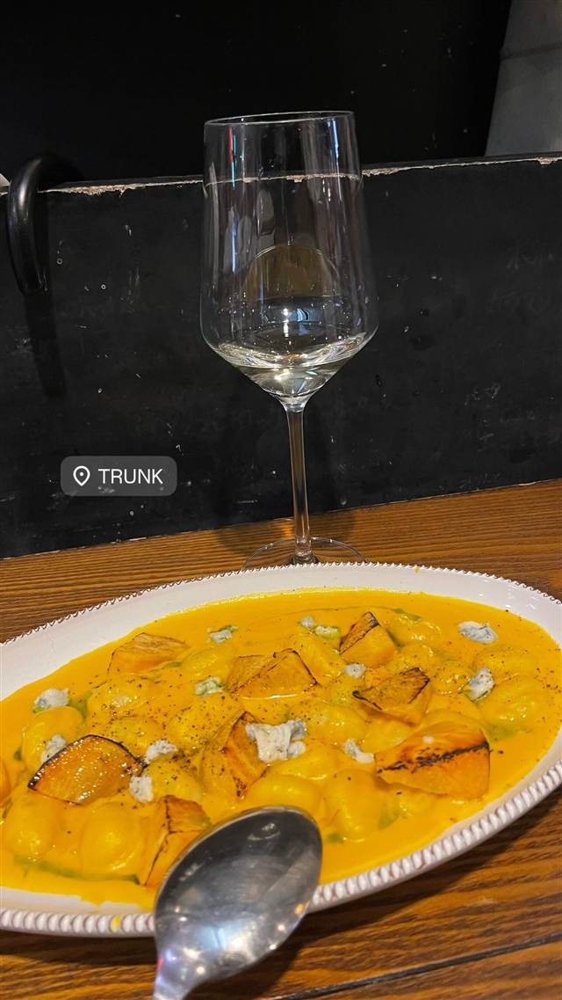
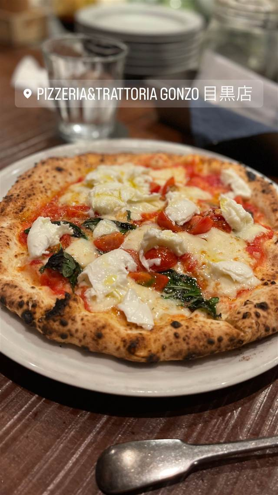
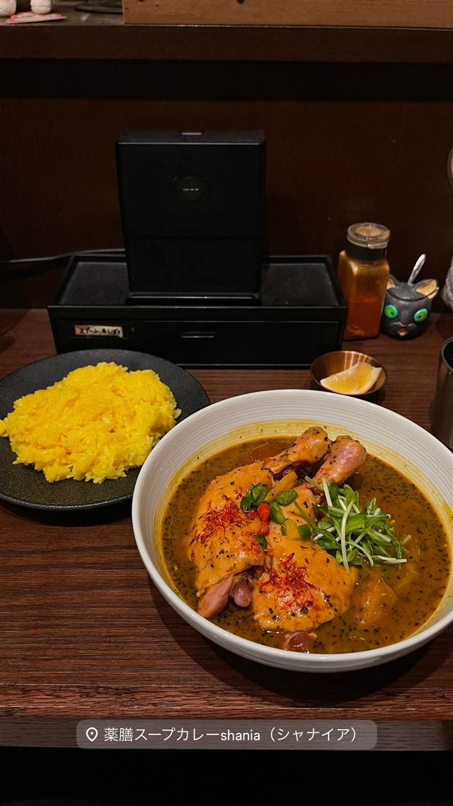
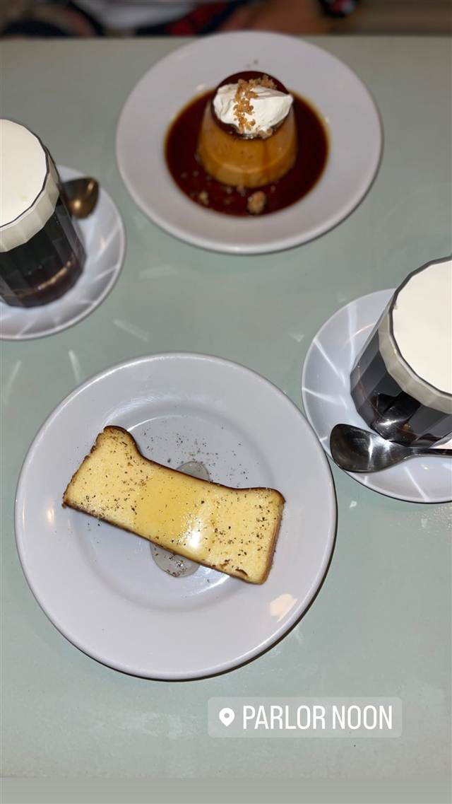

CASUAL BAR Don'tCry（旧BAR PLUS＋）
200種類超のカクテルとウイスキー、深夜4時まで営業
CASUAL BAR DON'TCRY
目黒駅東口すぐの気軽なバー。かつては「BAR PLUS＋」という店名だったが、現在は「CASUAL BAR Don'tCry」として200種類以上のカクテルやウイスキーを提供し、深夜4時まで営業している。
TRIVIA
へえ、という話
- 旧店名は「BAR PLUS＋」で、現在の店名に改称した
REVIEWS
みんなの声
「カジュアルな雰囲気と音楽の評判」に注目
- 気軽に入れるカジュアルな雰囲気と店員の対応の良さを評価する声が多い
- ヒップホップを中心とした音楽の選曲センスの良さを評価する声が多い
- 全体的な満足度としては可もなく不可もないという意見も見られる
- 客席数がやや少なめで店内もやや手狭に感じられるという指摘もある
食べログ 口コミ21件
| 系譜 | 旧店名「BAR PLUS＋」から改称 |
|---|---|
| 看板 | カクテル（200種類以上のカクテル・ウイスキー・ワインを提供） |
| 予算 | 夜 ¥2,000～¥2,999 |
| 場所 | 目黒駅（東口） 東京都品川区上大崎2-15-5 長者丸ビル105 |
| 注意 | 目黒駅東口から徒歩2分、19時頃〜4時営業でほぼ年中無休、約20名収容 |
食べたもの：カクテル
NEARBY
近い店・同じ系統の店
-

★7 二郎系(直系) 目黒駅 ラーメン二郎 目黒店 慶應大学応援部出身の店主が開いた二郎の老舗 昼 ～¥999 夜 ～¥999 -

イタリアン 目黒駅（西口） TRUNK（トランク） 国産和牛や北海道鹿肉、80種のワインと味わうイタリアン 昼 ¥1,000～¥1,999 夜 ¥4,000～¥4,999 -

ピザ 目黒駅（東口徒歩2分） Pizzeria&Trattoria GONZO 目黒店 専用石窯で焼く薪窯ナポリピッツァと炭火焼きの肉料理が通し営業で味わえる 夜 ¥5,000～¥5,999 -
 エスニック・各国料理 目黒駅（東口）
Cabe Meguro（チャベ目黒店）
インドネシア語で唐辛子を意味する全メニューハラール対応のナシゴレン
昼 ¥1,000～¥1,999 夜 ¥3,000～¥3,999
エスニック・各国料理 目黒駅（東口）
Cabe Meguro（チャベ目黒店）
インドネシア語で唐辛子を意味する全メニューハラール対応のナシゴレン
昼 ¥1,000～¥1,999 夜 ¥3,000～¥3,999
-

スープカレー 目黒／恵比寿 薬膳スープカレー・シャナイア（Shania） 元ITエンジニアが脱サラ、フレンチ仕込みの薬膳スープカレー 昼 ¥1,000～¥1,999 夜 ¥2,000～¥2,999 -

ケーキ・パフェ 目黒駅 PARLOR NOON 1階のアジア料理店シェフと共同開発したプリンとトースト 昼 ¥1,000～¥1,999 夜 ¥2,000～¥2,999